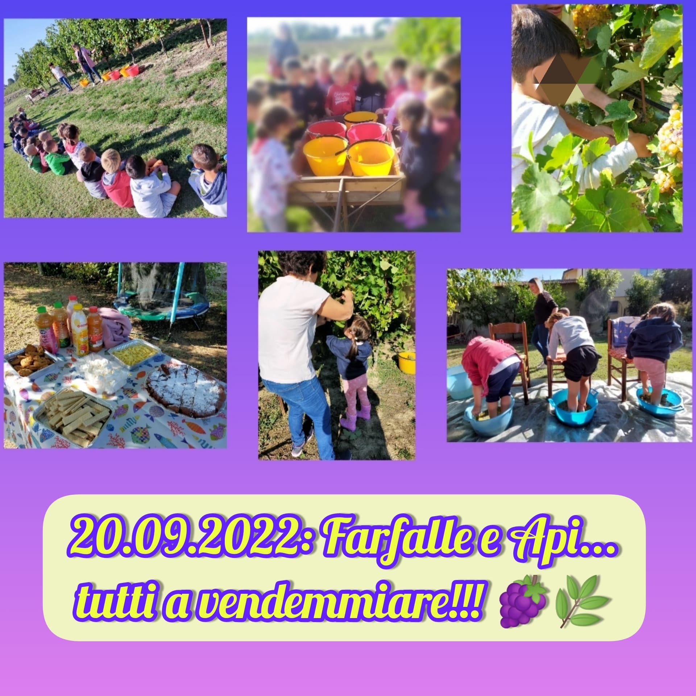

La Cucina
La nostra struttura ospita anche una cucina interna alla scuola quindi tutti i pasti (merenda del mattino, pranzo e merenda al pomeriggio) sono cucinati freschi, sia per il Nido sia per la Scuola dell'Infanzia, seguendo le tabelle dietetiche approvate dall'AUSL di Ravenna, le grammature previste e rispettando le normative H.C.C.P. del D.Lgs 155/97 relative alla sicurezza ed igiene degli alimenti.
Siamo attrezzati per preparare pasti a bambini con intolleranze alimentari e/o esigenze dietetiche particolari.
I ritmi dei pasti sono regolari ma anche flessibili in relazione all'età e all'autonomia dei bambini: diamo particolare attenzione alla qualità relazionale di questo momento della giornata, che deve abbinare l'interazione individualizzata delle educatrici con i singoli bambini con la creazione di un clima positivo non centrato esclusivamente sul cibo bensì volta ad una buona educazione alimentare, alla scoperta degli alimenti, dei colori, degli odori e dei sapori.